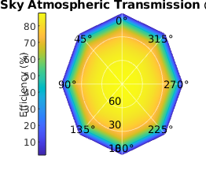

Contents
Example usage of MODTRAN data
% Data from MODTRAN can be utilised within the qrackling, in the following steps we will take a folder containing MODTRAN data at different elevations and construct a matrix that we can later use as an input to _environment.Environment_. This then allows for it to be easily incorporated into satellite pass simulations.
Obtaining the files
% Example data can be found the _'Examples/Data'_ folder inside the install location of this toolbox. We can find this by calling _which_ on one of the toolboxes functions. loc = which('utilities.readModtranFile'); [path, ~, ~] = fileparts(loc); elems = strsplit(path, filesep); path_root = string(join(elems(1:end-1), filesep)) + filesep; % Here we convert file separators so this can be run on any platform whichSeparator = @(Path, Sep) Sep{cellfun(@(sep) contains(Path, sep), Sep)}; MakePathNative = @(Path) strjoin(strsplit(Path, whichSeparator(Path, {'/', '\'})), filesep); example_path = "Examples/Data/atmospheric transmittance/varying elevation MODTRAN data 2/"; data_path = path_root + MakePathNative(example_path); % Now that we have a path for our data (_data_path_) we can find all of the files it contains. Specificially we want the csv files, the following lambda function lets us quickly grab the data files we are looking for. paths = dir(data_path); FilterStrings = @(haystack, needle) haystack(arrayfun(@(h) contains(h, needle), haystack)); csv_files = FilterStrings({paths.name}, ".csv"); disp(csv_files')
{'Transm_100km_obs_zen_0deg_scan.csv' }
{'Transm_100km_obs_zen_10deg_scan.csv'}
{'Transm_100km_obs_zen_20deg_scan.csv'}
{'Transm_100km_obs_zen_30deg_scan.csv'}
{'Transm_100km_obs_zen_40deg_scan.csv'}
{'Transm_100km_obs_zen_50deg_scan.csv'}
{'Transm_100km_obs_zen_60deg_scan.csv'}
{'Transm_100km_obs_zen_70deg_scan.csv'}
{'Transm_100km_obs_zen_80deg_scan.csv'}
{'Transm_100km_obs_zen_90deg_scan.csv'}
Preparing files
The files in this directory following a naming scheme with the folling structure: { data type, visibility, label, zenith label, zenith angle, _, .extensions }. Since we want to read the data in from these files in order of their zenith angles we will have to split their file names into these elements and then sort the array according to zenith angles.
schema = {'data_type', 'visibility', 'visibility_label', 'zenith_label', 'zenith_angle', 'end'};
file_details = cellfun(@(f) cell2struct(split(f, "_"), schema), csv_files);
elevations = sort(str2double(replace({file_details.zenith_angle}, "deg", "")));
sorted_file_names = string( ...
arrayfun( ...
@(n) csv_files(contains(csv_files, "_" + num2str(n) + "deg")), ...
elevations, ...
UniformOutput=false)');
disp(sorted_file_names)
"Transm_100km_obs_zen_0deg_scan.csv"
"Transm_100km_obs_zen_10deg_scan.csv"
"Transm_100km_obs_zen_20deg_scan.csv"
"Transm_100km_obs_zen_30deg_scan.csv"
"Transm_100km_obs_zen_40deg_scan.csv"
"Transm_100km_obs_zen_50deg_scan.csv"
"Transm_100km_obs_zen_60deg_scan.csv"
"Transm_100km_obs_zen_70deg_scan.csv"
"Transm_100km_obs_zen_80deg_scan.csv"
"Transm_100km_obs_zen_90deg_scan.csv"
Extracting data
With the files now in order we can read in the wavelength and transmission data from each and construct a matrix for them. The utilities.readModtranFile function pull these columns from a typical MODTRAN file.
wavelengths = []; transmissions = []; for f = sorted_file_names' [w, t] = utilities.readModtranFile(char(data_path + f)); wavelengths = [wavelengths, w(~isnan(w))]; transmissions = [transmissions, t(~isnan(t))]; end % The _environment.allSkyTransmission_ function then allows us to convert the transmission data into a matrix with dimensions _[numel(headings), numel(elevations)]_ that we can the plot on polar axes. [sky_transmission, headings] = environment.allSkyTransmission(transmissions, wavelengths(:, 1), elevations);
Filtering
Since our files contain data for a range of wavelenths we can construct the following lambda functions to find the correct slice of our transmission matrix for a chosen wavelength.
Extrema = @(arr) [min(arr), max(arr)]; InRange = @(value, bounds) all([any(value >= bounds), any(value <= bounds)]); Iota = @(x) linspace(0, x, x+1); Take = @(arr, choices) arr(choices); IndexOfWavelength = @(wvls, choice) Take(Iota(numel(wvls)), wvls == choice) * InRange(wvls, Extrema(wvls)); DataAtWavelength = @(data, wvls, choice) squeeze(data(IndexOfWavelength(wvls, choice), :, :));
Plotting
Picking an example wavelength of 600nm we can then plot the result.
wavelength = 600; T = DataAtWavelength(sky_transmission, wavelengths(:, 1), wavelength); figure plots.polarpcolor( ... headings, elevations, T .* 100, ... "Title", ['All Sky Atmospheric Transmission @ ', num2str(wavelength), 'nm'], ... "ColourBarLabel", 'Efficiency (%)');